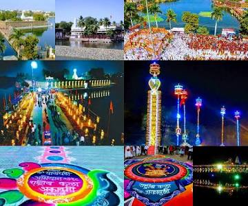
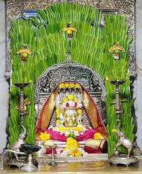
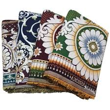
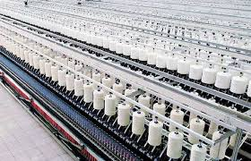
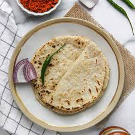
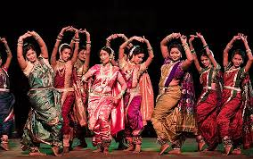

1. Spiritual Heritage: The Gadda Yatra
The heart of Solapur’s culture lies in the Siddheshwar Temple, dedicated to the 12th-century saint Shri Siddheshwar.
The most significant cultural event is the Gadda Yatra held in January during Makar Sankranti.
The festival is famous for the Nandi Dhwaja procession where tall decorated bamboo poles are carried through the city by devotees, symbolizing a celestial wedding.


2. The Textile Legacy
Solapur is globally recognized for its handloom and powerloom industry.
The Solapuri Chaddar was the first product in Maharashtra to receive a Geographical Indication (GI) status.
These blankets are known for their bold geometric patterns, durability and vibrant colors. The city is also famous for its high-quality Terry towels.


3. Culinary Identity
The food culture of Solapur is known for its spice and use of local ingredients.
- Shenga Chatney – A spicy peanut garlic chutney.
- Jowar Bhakri – The main flatbread as Solapur is a major producer of jowar.
- Khara Mutton – A popular spicy local non-vegetarian dish.
- Amboli – A fermented pancake-like breakfast dish.



4. Language and Arts
Due to its geographical location, people in Solapur commonly speak a mix of Marathi, Kannada and Telugu.
The city has a deep-rooted tradition of folk arts including Lavani performances and Dhangari Gaja, a traditional dance of the shepherd community.
